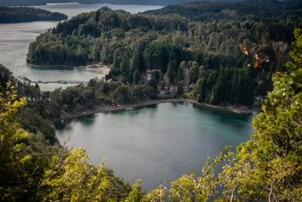
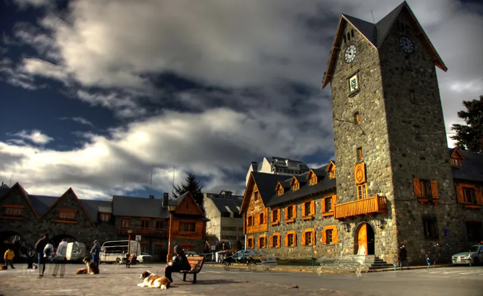
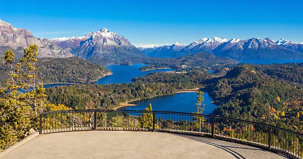

Bariloche
Información general
Bariloche es una ciudad patagónica rodeada de montañas, bosques y lagos. Forma parte del entorno del Parque Nacional Nahuel Huapi y es un destino visitado durante todo el año: en verano se destacan las actividades al aire libre y en invierno los deportes de nieve.
Atractivos turisticos
Centro Civico
Conjunto arquitectonico de piedra y madera que es uno de los simbolos de la ciudad.

Cerro Catedral
Centro de montaña conocido por sus pistas y actividades de invierno.

Circuito Chico
Recorrido panoramico que permite conocer distintos paisajes y miradores de la zona.

Gastronomia
Algunas comidas y preparaciones que se pueden probar:
Chocolate artesanal
Bariloche es conocida por sus chocolaterias y productos regionales.
Trucha
Pescado que aparece en distintos platos de restaurantes de la zona.
Cordero patagonico
Preparacion regional que se puede probar en restaurantes especializados.
Sitios famosos
Lago Nahuel Huapi
Gran lago de origen glaciar que forma parte del paisaje caracteristico de Bariloche.
Cerro Campanario
Mirador al que se puede subir para observar lagos y montañas.
Colonia Suiza
Localidad cercana reconocida por su historia, sus paisajes y su gastronomia.
Actividades para turistas
- Hacer caminatas y excursiones por senderos y miradores.
- Navegar por el lago Nahuel Huapi mediante excursiones habilitadas.
- Practicar esqui o snowboard durante la temporada de nieve.
- Recorrer Circuito Chico y visitar chocolaterias.